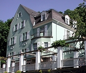

Viele Vorhaben der Universität sind auf finanzielle Unterstützung angewiesen. Die Stiftung hat sich in den letzten Jahren für folgende größere Projekte eingesetzt:
1. Heidelberger Stiftungssymposium (2018)
Mit dem Symposium wollte die Stiftung den internationalen und fachübergreifenden wissenschaftlichen Austausch zu gesellschaftlich relevanten Themen anstoßen und fördern. Es fand im Internationalen Wissenschaftsforum Heidelberg statt – mitten in der Altstadt, mit attraktivem Ambiente für den Gedankenaustausch zwischen Heidelberger Wissenschaftler:innen und ihren Gästen aus dem Ausland.
Neuer Innenhof für die „Neue Universität“

Zum 625. Geburtstag der Universität gab es ein Geschenk: Die Stiftung hatte für die Modernisierung der „Neuen Universität“ Spenden gesammelt, die es ermöglichten, auch den begrünten Innenhof des Hörsaalgebäudes in das Modernisierungskonzept einzubinden. Ziel war es, den Innenhof als Außenraum sichtbarer und als Aufenthaltsort attraktiver zu machen. Insgesamt 250.000 Euro brachten Kuratoren, Vorstand und Freunde der Stiftung zusammen.
Das Gebäude und sein Innenhof wurden nach fast zweijähriger Umbauphase am 25. Juni 2011 feierlich wiedereröffnet. Festschrift der Universität (PDF)